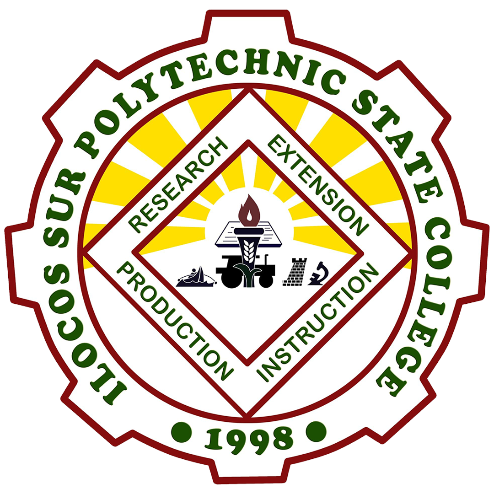

Search for Mr. and Ms. Intrams 2024-2025
Official Tabulation
Welcome to the official tabulation page for the ISPSC-Tagudin Campus Intramurals 2024-2025. Stay updated with the latest scores and rankings as we crown the next Mr. and Ms. Intrams!
View Tabulation